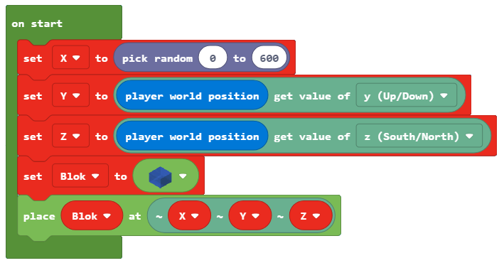
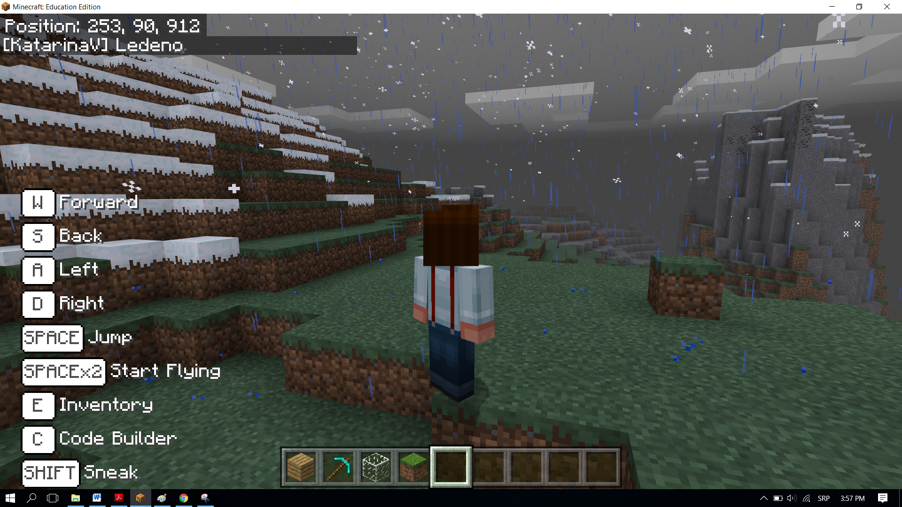
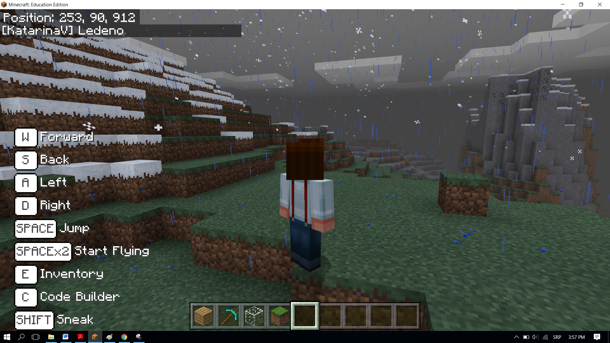

Projektni zadatak - Toplo - Hladno¶
Isto kao i ti, i programi u MakeCode-u mogu da donose odluke. Do sada, sve programe koje smo pisali, bili su linijski programi, tačnije programi koji se izvršavaju redom naredbu po naredbu do kraja programa. Za razliku od ovakvih programa, gde se svaki korak, odnosno svaka naredba, izvršava samo jedanput, u algoritmima odlučivanja, tačnije razgranatim (uslovnim) algoritmima neke naredbe će se izvršiti, a neke ne, u zavisnosti od ispunjenosti uslova.
Demonstiraćemo ovaj koncept programiranja kroz igru Toplo - Hladno. Na osnovu pozicije lika prikazuje se poruka koliko je on udaljen od objekta postavljenog u svetu. Ako je blizu, izgovoriće se reč Toplo, ako je daleko od predmeta biće izgovoreno Hladno. Ako je lik (igrač) jako blizu objektu, biće izogoveno Vrelo, a ako je jako daleko Ledeno.
Faza 1.
Razmišljanje o problemu: Za određivanje udaljednosti objekta od lika (igrača) potrebno je da izračunamo rastojanje između njih, i da na osnovu tih vrednosti dobijemo željenu poruku.
Faza 2
Pokreni Code Builder (klikom na taster C) i otvoriće se editor prozor u kome je moguće ređati blokove.
Na početku u bloku on start potrebno je definisati i postaviti objekat u svet. Postavićemo ga tako da vrednost koordinate X ima nasumičnu vrednost iz intervala 0 do 600, a ostale dve koordinate imaju vrednost Y i Z koordinata igrača.
Da bismo to uradili potrebno je da kreiramo promenljive X, Y, Z (čuvaju koordinate položaja objakta) i Blok (čuva objekat). Kreiranim promenljivima dodeljijemo početne vrednosti.
U bloku  definišemo položaj i vrstu objakta prevlačenjem blokova na sledeći način:
definišemo položaj i vrstu objakta prevlačenjem blokova na sledeći način:
definišemo koordinatu x pomoću promenljive
Xkoja će imati nasumičnu vrednost iz intervala od 0 do 600, to postižemo korišćenjem bloka iz kategorije
iz kategorije  .
.definišemo koordinatu y pomoću promenljive
Ykoja će imati vrednost y koordinate položaja lika u svetu. To postižemo korišćenjem bloka iz kategorije
iz kategorije  , u koji umesto promenljive position postavljamo promenljivu
, u koji umesto promenljive position postavljamo promenljivu Y, i bloka iz kategorije
iz kategorije  .
.definišemo koordinatu z pomoću promenljive
Zkoja će imati vrednost z koordinate položaja lika u svetu. To postižemo korišćenjem bloka iz kategorije , u koji umesto promenljive position postavljamo promenljivu
iz kategorije , u koji umesto promenljive position postavljamo promenljivu Z, i bloka iz kategorije .definišemo objekat koji će biti postavljen u svetu. To postižemo korišćenjem bloka
 iz kategorije
iz kategorije  .
.
Izgled koda nakon definisanja promenljivih:

Kada su definisane koordinate i objekat koji će biti postavljen potrebno je prevući blok kojim će taj objekat biti fizički postavljen u svet.
Za to korisitmo blok  iz kategorije . Ovaj blok ima dva argumenta, od kojih u prvi argument postvaljamo promenljivu
iz kategorije . Ovaj blok ima dva argumenta, od kojih u prvi argument postvaljamo promenljivu  , a u drugi postavljamo koordinate ,
, a u drugi postavljamo koordinate ,  i
i  za definisanje položaja objekta korišćenjem bloka iz kategorije .
za definisanje položaja objekta korišćenjem bloka iz kategorije .
Izmenjeni kod ima sledeći izgled:
Na ovaj način smo pozicionirali objekat u Minecraft svet. Ako želimo da vidimo koje su njegove koordinate možemo iskoristiti blok . Za prikazivanje možemo koristiti blok  iz podkategorije kategorije
iz podkategorije kategorije  .
.
{kind=link}
Dodavanjem ovog bloka program ima sledeći izgled:

Sledeći korak je da u bloku  prevućemo blokove pomoću kojih ćemo odrediti rastojanje između postavljenog objekta u svetu i lika (igrača). To postižemo definisanjem promenljivih koje će čuvati poziciju lika (igrača), to jest, one čuvaju x, y i z koordinate lika. Pojedinačne koordinate dobijamo korišćenjem bloka i bloka
prevućemo blokove pomoću kojih ćemo odrediti rastojanje između postavljenog objekta u svetu i lika (igrača). To postižemo definisanjem promenljivih koje će čuvati poziciju lika (igrača), to jest, one čuvaju x, y i z koordinate lika. Pojedinačne koordinate dobijamo korišćenjem bloka i bloka  .
.
Kreiramo promenljive X1, Y1 i Z1 i dodeljujemo im vrednosti koordinata položaja lika:

Da bismo izračunali rastojanje između lika i objekta potrebno je da iskoristimo formulu koja se koristi i u matematici za određivanje rastojanja u 3D između dve tačke A (x1, y1, z1) i B(x2, y2, z2):

Kreiramo promenljivu rastojanje, i dodeljujemo joj vrednost koja se dobija korišćenjem formule za izračunavanje rastojanja dve tačke.
U MakeCode-u matematičke operacije su predstavljene u kategoriji . Jednostvnim ređanjem odgovarajućih blokova (+, -, i kvadrat **, kao i kvadratni koren) formiramo gornju formula:

Dopunjeni kod izgleda ovako:

Sada kada imamo vrednost promenljive rastojanje, možemo da završimo našu igru Toplo-Hladno.
Na osnovu rastojanja lika (igrača) od objekta Minecraft obaveštava lik (igrača) gde je objekat kratkim porukama kao što su Toplo, ako je objekat blizu, Hladno, ako je predmeta daleko. Ako je lik (igrač) jako blizu objektu, biće izogoveno Vrelo, a ako je jako daleko Ledeno.
Na osnovu postavke zadatka imamo da:
Ako je objekat udaljen više od 100 blokova od lika (igrača), treba da se izgovori Ledeno.
U suprotnom ako je objekat udaljen više od 50 blokova od lika (igrača), treba da se izgovori Hladno.
U suprotnom ako je objekat udaljen više od 25 blokova od lika (igrača), treba da se izgovori Toplo.
U suprotnom ako je objekat udaljen više od 12 blokova od lika (igrača), treba da se izgovori Vrelo.
U suprotnom ako je objekat kod objekta (rastojanje jednako nuli), treba da se izgovori Pronađen.
Za ovo ćemo koristi blok  i operatore poređenja (> i =) iz kategorije
i operatore poređenja (> i =) iz kategorije  . Grane dodajemo klikom na +.
Prevlačenjem ovih blokova dobijamo sledeći izgled koda:
. Grane dodajemo klikom na +.
Prevlačenjem ovih blokova dobijamo sledeći izgled koda:

Konačan izgled programa za igricu Toplo - Hladno:
Faza 3
Testiranje programa.
Klikom na dugme  .
.
Pokrećemo čet klikom na taster T na tastaturi, u unosimo reč gde, koja predstavlja „okidač“ za startovanje igrice.
 
